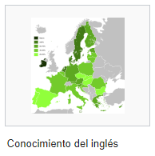
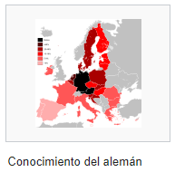
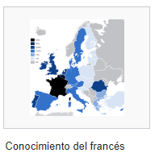
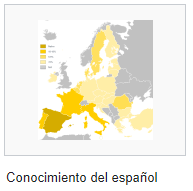
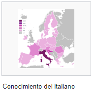
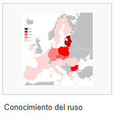
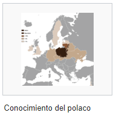
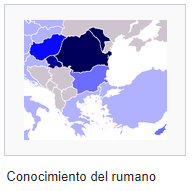

Lenguas en Europa
En la gran mayoría de países tienen por ley la enseñanza de por lo menos el inglés, mientras hay otros que admiten en la enseñanza obligatoria dos o incluso tres idiomas. Debido a ello, en Europa hay en idiomas con una gran diferencia en cuanto al número nativo y el número total de personas que se pueden comunicar en cierto idioma.
*La siguiente tabla es una lista de los idiomas más hablado en el continente*
| IDIOMA | HABLANTES NATIVOS | TOTAL |
| Ruso | 160 000 000 | 160 000 000 |
| Alemán | 97 000 000 | 170 000 000 |
| Francés | 71 000 000 | 135 000 000 |
| Italiano | 65 000 000 | 82 000 000 |
| Inglés | 63 000 000 | 260 000 000 |
| Polaco | 38 500 000 | - |
| Español | 38 000 000 | 76 000 000 |
| Ucraniano | 32 600 000 | - |
| Rumano | 24 000 000 | 28 000 000 |
| Neerlandés | 22 000 000 | - |
Mapas de los idiomas más hablados en la Unión Europea:







